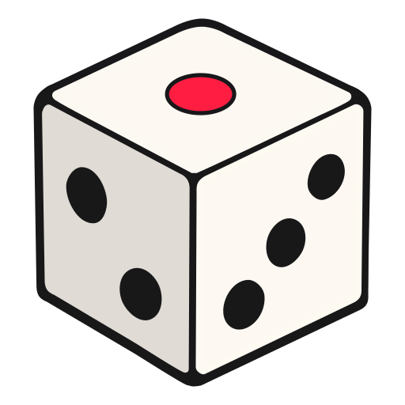

Game Library
Secret Saboteur
Find the saboteur before it's too late.
3–10 5–15 min Easy
Imposter
A modern classic. Someone knows less than everyone else...
3–10 5–15 min Easy
More Games
New games are coming in future updates!

Pass n' Play Pass the Phone. Start the Fun.
Party Games Built for One Screen.
Choose a game below to get started.
Find the saboteur before it's too late.
3–10 5–15 min Easy
A modern classic. Someone knows less than everyone else...
3–10 5–15 min Easy
New games are coming in future updates!